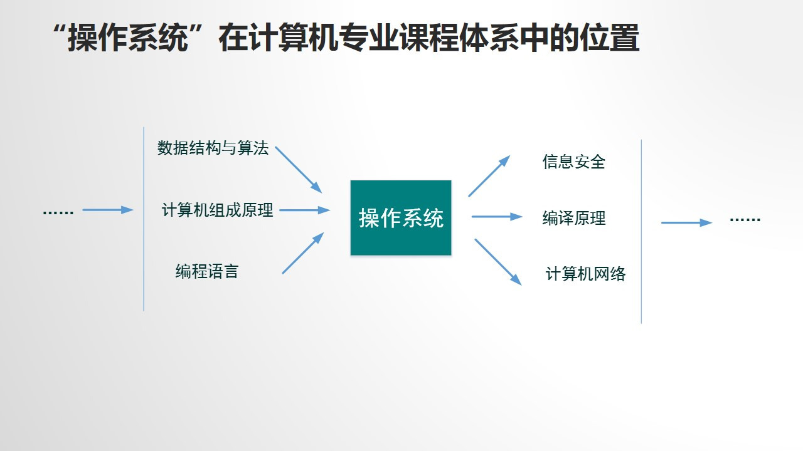
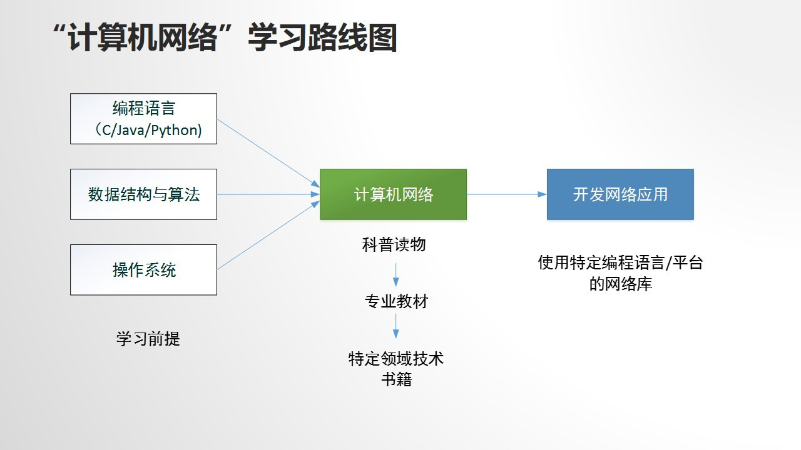
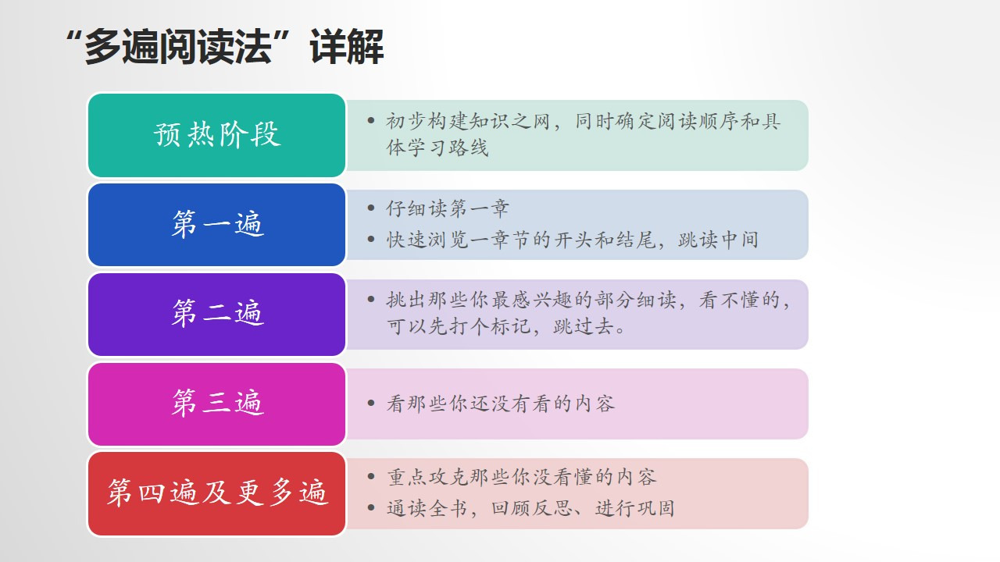
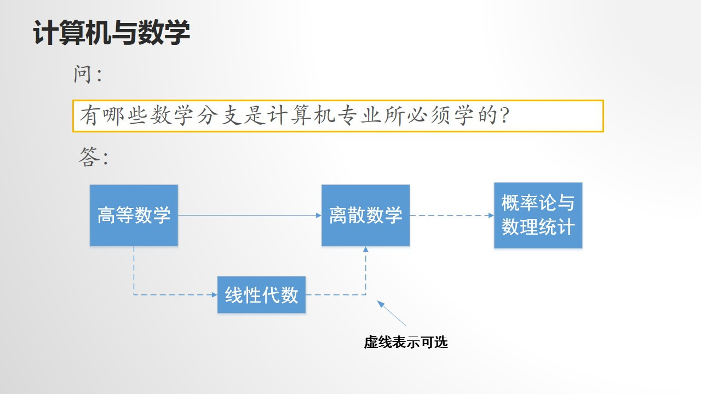

<!DOCTYPE html>
<html>
<head><meta name="generator" content="Hexo 3.8.0">
  <meta charset="utf-8">
  
  <title>Gavin-高效学习计算机专业课程 | Gavin</title>

  <!-- keywords -->
  
    <meta name="keywords" content="Gavin">
  

  <meta name="viewport" content="width=device-width, initial-scale=1, maximum-scale=1">
  <meta name="description" content="计算机专业各种骨干核心课程中包容了计算机科学中最基础的知识，计算机专业课程难度较大，可锻炼自身思维能力。计算机专业的学习与实用应用型知识的学习相互促进 计算机专业课程： 必修课：计算机专业的核心课程，代表着一名计算机专业学生应该具备的计算机科学理论和基础（最重要的四门）：  数据结构与算法 数据结构表示信息的本身，算法表示信息的处理过程，数据结构与算法不能分开  课程大致分为两大块：  数据结构与">
<meta name="keywords" content="Gavin">
<meta property="og:type" content="article">
<meta property="og:title" content="高效学习计算机专业课程">
<meta property="og:url" content="http://yoursite.com/2019/07/28/高效学习计算机专业课程/index.html">
<meta property="og:site_name" content="Gavin">
<meta property="og:description" content="计算机专业各种骨干核心课程中包容了计算机科学中最基础的知识，计算机专业课程难度较大，可锻炼自身思维能力。计算机专业的学习与实用应用型知识的学习相互促进 计算机专业课程： 必修课：计算机专业的核心课程，代表着一名计算机专业学生应该具备的计算机科学理论和基础（最重要的四门）：  数据结构与算法 数据结构表示信息的本身，算法表示信息的处理过程，数据结构与算法不能分开  课程大致分为两大块：  数据结构与">
<meta property="og:locale" content="English & Chinese">
<meta property="og:image" content="http://yoursite.com/2019/07/28/高效学习计算机专业课程/Pictures/1564308718079.jpeg">
<meta property="og:image" content="http://yoursite.com/2019/07/28/高效学习计算机专业课程/Pictures/1564310058238.jpeg">
<meta property="og:image" content="http://yoursite.com/2019/07/28/高效学习计算机专业课程/Pictures/1564310294277.jpeg">
<meta property="og:image" content="http://yoursite.com/2019/07/28/高效学习计算机专业课程/Pictures/1564310530249.jpeg">
<meta property="og:image" content="http://yoursite.com/2019/07/28/高效学习计算机专业课程/Pictures/1564310760424.jpeg">
<meta property="og:image" content="http://yoursite.com/2019/07/28/高效学习计算机专业课程/Pictures/1564313211141.jpeg">
<meta property="og:image" content="http://yoursite.com/2019/07/28/高效学习计算机专业课程/Pictures/IMG_20190728_192718.jpg">
<meta property="og:image" content="http://yoursite.com/2019/07/28/高效学习计算机专业课程/Pictures/1564216063029.jpeg">
<meta property="og:image" content="http://yoursite.com/2019/07/28/高效学习计算机专业课程/Pictures/1564217426707.jpeg">
<meta property="og:image" content="http://yoursite.com/2019/07/28/高效学习计算机专业课程/Pictures/1564217879671.jpeg">
<meta property="og:image" content="http://yoursite.com/2019/07/28/高效学习计算机专业课程/Pictures/高效学习计算机专业课程1564218080443.jpeg">
<meta property="og:image" content="http://yoursite.com/2019/07/28/高效学习计算机专业课程/Pictures/高效学习计算机专业课程1564218087879.jpeg">
<meta property="og:image" content="http://yoursite.com/2019/07/28/高效学习计算机专业课程/Pictures/1564311904162.jpeg">
<meta property="og:image" content="http://yoursite.com/2019/07/28/高效学习计算机专业课程/Pictures/高效学习计算机专业课程1564218092614.jpeg">
<meta property="og:image" content="http://yoursite.com/2019/07/28/高效学习计算机专业课程/Pictures/1564278030091.jpeg">
<meta property="og:image" content="http://yoursite.com/2019/07/28/高效学习计算机专业课程/Pictures/1564278190978.jpeg">
<meta property="og:image" content="http://yoursite.com/2019/07/28/高效学习计算机专业课程/Pictures/1564302342942.jpeg">
<meta property="og:image" content="http://yoursite.com/2019/07/28/高效学习计算机专业课程/Pictures/1564307204446.jpeg">
<meta property="og:image" content="http://yoursite.com/2019/07/28/高效学习计算机专业课程/Pictures/1564308330214.jpeg">
<meta property="og:updated_time" content="2019-07-29T02:26:52.925Z">
<meta name="twitter:card" content="summary">
<meta name="twitter:title" content="高效学习计算机专业课程">
<meta name="twitter:description" content="计算机专业各种骨干核心课程中包容了计算机科学中最基础的知识，计算机专业课程难度较大，可锻炼自身思维能力。计算机专业的学习与实用应用型知识的学习相互促进 计算机专业课程： 必修课：计算机专业的核心课程，代表着一名计算机专业学生应该具备的计算机科学理论和基础（最重要的四门）：  数据结构与算法 数据结构表示信息的本身，算法表示信息的处理过程，数据结构与算法不能分开  课程大致分为两大块：  数据结构与">
<meta name="twitter:image" content="http://yoursite.com/2019/07/28/高效学习计算机专业课程/Pictures/1564308718079.jpeg">
  
    <link rel="alternative" href="/atom.xml" title="Gavin" type="application/atom+xml">
  
  
    <link rel="icon" href="https://weizhe.xyz/timg.ico">
  
  <link rel="stylesheet" href="/css/style.css">
  
  

  <script src="//cdn.bootcss.com/require.js/2.3.2/require.min.js"></script>
  <script src="//cdn.bootcss.com/jquery/3.1.1/jquery.min.js"></script>

  
      <script src="https://cdn1.lncld.net/static/js/av-core-mini-0.6.1.js"></script>
<script>AV.initialize("your_app_id", "your_app_key");</script>
<script src="/js/Counter.js"></script>
  
</head></html>
<body>
  <div id="container">
    <div id="particles-js"></div>
    <div class="left-col">
    <div class="overlay"></div>
<div class="intrude-less">
	<header id="header" class="inner">
		<a href="/" class="profilepic">
			
			
			
		</a>

		<hgroup>
		  <h1 class="header-author"><a href="/">Weizhe Yang</a></h1>
		</hgroup>

		
		<p class="header-subtitle">Gavin</p>
		

		
			<div class="switch-btn">
				<div class="icon">
					<div class="icon-ctn">
						<div class="icon-wrap icon-house" data-idx="0">
							<div class="birdhouse"></div>
							<div class="birdhouse_holes"></div>
						</div>
						<div class="icon-wrap icon-ribbon hide" data-idx="1">
							<div class="ribbon"></div>
						</div>
						
						<div class="icon-wrap icon-link hide" data-idx="2">
							<div class="loopback_l"></div>
							<div class="loopback_r"></div>
						</div>
						
						
						<div class="icon-wrap icon-me hide" data-idx="3">
							<div class="user"></div>
							<div class="shoulder"></div>
						</div>
						
					</div>
					
				</div>
				<div class="tips-box hide">
					<div class="tips-arrow"></div>
					<ul class="tips-inner">
						<li>菜单</li>
						<li>标签</li>
						
						<li>友情链接</li>
						
						
						<li>关于我</li>
						
					</ul>
				</div>
			</div>
		

		<div class="switch-area">
			<div class="switch-wrap">
				<section class="switch-part switch-part1">
					<nav class="header-menu">
						<ul>
						
							<li><a href="/">主页</a></li>
				        
							<li><a href="/archives">所有文章</a></li>
				        
						</ul>
					</nav>
					<nav class="header-nav">
						<div class="social">
							
								<a class="github" target="_blank" href="https://github.com/Zhev587/" title="github">github</a>
					        
						</div>
					</nav>
				</section>
				
				
				<section class="switch-part switch-part2">
					<div class="widget tagcloud" id="js-tagcloud">
						<a href="/tags/HPC/" style="font-size: 10px;">HPC</a> <a href="/tags/hexo/" style="font-size: 10px;">hexo</a>
					</div>
				</section>
				
				
				
				<section class="switch-part switch-part3">
					<div id="js-friends">
					
			          <a target="_blank" class="main-nav-link switch-friends-link" href="https://www.iczc.me/">iczc</a>
			        
			        </div>
				</section>
				

				
				
				<section class="switch-part switch-part4">
				
					<div id="js-aboutme">A student of the College of Computer Engineering of Weifang University. I&#39;m learning hard on Information Technology, and this is where I save my study records.Not all the essays here are my original works, but they have helped me a lot in the past time, so I recorded them to share with everyone and it also remind me what should I do if I face the same situations which I have met in the past but forgot how to operate.</div>
				</section>
				
			</div>
		</div>
	</header>				
</div>
    </div>
    <div class="mid-col">
      <nav id="mobile-nav">
  	<div class="overlay">
  		<div class="slider-trigger"></div>
  		<h1 class="header-author js-mobile-header hide">Weizhe Yang</h1>
  	</div>
	<div class="intrude-less">
		<header id="header" class="inner">
			<div class="profilepic">
				
			</div>
			<hgroup>
			  <h1 class="header-author">Weizhe Yang</h1>
			</hgroup>
			
			<p class="header-subtitle">Gavin</p>
			
			<nav class="header-menu">
				<ul>
				
					<li><a href="/">主页</a></li>
		        
					<li><a href="/archives">所有文章</a></li>
		        
		        <div class="clearfix"></div>
				</ul>
			</nav>
			<nav class="header-nav">
				<div class="social">
					
						<a class="github" target="_blank" href="https://github.com/Zhev587/" title="github">github</a>
			        
				</div>
			</nav>
		</header>				
	</div>
</nav>
      <div class="body-wrap"><article id="post-高效学习计算机专业课程" class="article article-type-post" itemscope itemprop="blogPost">
  
    <div class="article-meta">
      <a href="/2019/07/28/高效学习计算机专业课程/" class="article-date">
  	<time datetime="2019-07-28T11:09:47.000Z" itemprop="datePublished">2019-07-28</time>
</a>
    </div>
  
  <div class="article-inner">
    
      <input type="hidden" class="isFancy">
    
    
      <header class="article-header">
        
  
    <h1 class="article-title" itemprop="name">
      高效学习计算机专业课程
      
    </h1>
  

      </header>
      
      <div class="article-info article-info-post">
        
        

        
          
<div class="counter-tag counter">
    <span id="/2019/07/28/高效学习计算机专业课程/" class="leancloud_visitors post-title-link" style="font-size: 12px" data-flag-title="高效学习计算机专业课程">
         &nbsp;
        view
    </span>
</div>

        
        <div class="clearfix"></div>
      </div>
      
    
    <div class="article-entry" itemprop="articleBody">
      
        <p>计算机专业各种骨干核心课程中包容了计算机科学中最基础的知识，计算机专业课程难度较大，可锻炼自身思维能力。计算机专业的学习与实用应用型知识的学习相互促进</p>
<h2 id="计算机专业课程："><a href="#计算机专业课程：" class="headerlink" title="计算机专业课程："></a>计算机专业课程：</h2><ul>
<li><p>必修课：计算机专业的核心课程，代表着一名计算机专业学生应该具备的计算机科学理论和基础（最重要的四门）：</p>
<ol>
<li><p>数据结构与算法<br><br> 数据结构表示信息的本身，算法表示信息的处理过程，数据结构与算法不能分开</p>
<p> 课程大致分为两大块：</p>
<ul>
<li>数据结构与算法的理论基础：弄明白概念和术语，掌握如何设计算法，如何评价一个算法的优劣</li>
<li>具体的数据结构和算法的介绍：通常只需要掌握最常用的几种，没有必要每个都去深究，每种数据结构和算法往往都有特定的应用场景，用来解决特定的问题。</li>
<li>学算法之前建议先掌握离散数学</li>
<li>对于算法，能够体会它的思想，知道应用场景和优缺点就足够，具体应用中需要自己设计算法的场景并不多</li>
<li>各种编程语言或者开发框架中都给出了算法的组件，大多能理解用途，会调用就可以</li>
</ul>
</li>
<li><p>计算机组成原理<br> <br> 介绍了计算机系统是由哪些部件组成的，这些部件之间是如何相互协作完成数据处理功能，同时又能满足成本、功耗等指标的。</p>
<p> 学习这门课前通常需要学习数字电路基础,建议先学习《编码》（强烈推荐），学完这门课后可进一步学习操作系统和编译原理</p>
<p> 学习内容：</p>
<ul>
<li>计算机系统的概述</li>
<li>指令集设计</li>
<li>处理器结构</li>
<li>I/O与存储系统与设计</li>
<li>并行计算（硕士）</li>
<li>云计算（硕士）</li>
</ul>
</li>
<li><p>操作系统<br><br> 位于多数软件开发工作的第”N-1”层，必须很好地掌握.</p>
<p> 学习之前必须学号数据结构与算法，也需要掌握计算机组成原理的基础，还要掌握C语言</p>
<p> 学习关键：<br> <br> 必须要将其与软件开发以及动手实验结合起来</p>
<p> Linux：在互联网和嵌入式开发占主导地位<br> Windows：桌面应用与行业应用</p>
</li>
<li><p>计算机网络<br><br>掌握相应的网络协议是掌握各种上层应用软件开发技术的关键。最大的特点就是分层：</p>
<p>《计算机网络：自顶向下方法》就是从上层协议介绍到下层协议</p>
<p>《计算机网络》Andrew S.Tanebaum：自下而上来介绍</p>
<p>《计算机网络：系统方法》则以横切的方式，针对一个特定的网络问题来展开介绍</p>
<p>弄清楚三个问题：</p>
<ol>
<li>计算机是如何连接的</li>
<li>数据是怎样在计算机网路中传输的</li>
<li>网络应用软件系统是怎样构建起来的</li>
</ol>
<p>学习建议：</p>
<ul>
<li>理解分层的概念，清楚每一层所解决的主要问题是什么，面临的主要问题是什么，设计者针对这一问题的解决方案是什么，应用了哪些基本原理，有哪些常用的算法</li>
<li>阅读科普书籍入门计算机网络</li>
<li>动手用编程语言结合计算机网络协议来完成一些简单的任务</li>
<li>应用层次的学习：重点学习HTTP协议并掌握面向对象知识</li>
<li>学习网络抓包工具巩固计算机网络的基础</li>
</ul>
</li>
</ol>
</li>
</ul>
<ul>
<li><p>ACM总结的18个计算机科学关键领域：</p>
<p><br></p>
<ul>
<li>对知识的掌握程度（三级）：<ol>
<li>Familiarity（了解）：What do you know about this? (你对它了解多少？)</li>
<li>Usage（会用）：What do you know how to do?(关于怎样做，你知道多少？)</li>
<li>Assessment（评估与决断）：Why would you do that?（为什么要这么做？）  </li>
</ol>
</li>
<li>针对特定的场景和特定的问题能找到多种解决方案，并能够对这些方案进行评估从中选出合适的来应用</li>
<li>ACM报告：软件工程知识领域中有关软件过程的知识集合，衡量对这些知识的掌握程度。</li>
<li>自学的核心任务：这18个核心领域之间有着紧密的联系，形成一个知识网络，构建这个知识网络就是自学的核心任务</li>
</ul>
</li>
</ul>
<p></p>
<ul>
<li>对计算机专业有了一定认识后要做两件事<ol>
<li>掌握一门编程语言：<br>这4种编程语言基本上是从事计算机行业所必须会掌握的语言，从哪一门入手都可以。<ul>
<li>C</li>
<li>Java</li>
<li>Java Script</li>
<li>Python</li>
</ul>
</li>
<li>学好数学</li>
</ol>
</li>
</ul>
<h2 id="学习方法："><a href="#学习方法：" class="headerlink" title="学习方法："></a>学习方法：</h2><ul>
<li></li>
<li>知识组块：根据知识的内在逻辑和意义吧相关联的信息碎片理解和重组而建立</li>
<li>人类的学习过程，就是把吸收的知识转换为知识组块存入人的长期记忆中的过程</li>
<li></li>
<li>(学以致用)<ul>
<li>根据特定场景分析特定的需求，确定学习的目的，有选择地读特定的书，读书中特定的部分，进行特定的实践，形成特定的知识组块，组合这些组块去解决特定的问题</li>
</ul>
<ol>
<li>针对具体的场景，根据场景需求，搜集各种资源，构建知识框架</li>
<li>通过学习，不断向原本的框架补充内容</li>
<li>建立好知识框架，解决问题所需要的知识组块全部准备就位就可以着手解决实际问题</li>
</ol>
</li>
<li></li>
<li>学习需要循序渐进：<ul>
<li>请教高人指导学习路线</li>
<li>对于经典的书籍，看不懂时候不要硬着头皮看，效率会很低，要记录下看不懂的地方，停下来弄明白看不懂的原因，是否是没有掌握某些基础的东西，若是则先放一放，掌握基础后再来。</li>
</ul>
</li>
<li>将学习划分为各个阶段，给每个阶段制定一个明确的目标和任务，生成学习的进度条，有助于增强学习动力</li>
<li><p>真正有效的学习：<br></p>
<p>最初学到的只是些孤立的知识点，通过消化吸收和实践，知识点连接起来形成知识组块，组块之间再连接就形成知识之网</p>
</li>
</ul>
<p><strong>计算机专业的学习要落实在理论与实践的统一上</strong></p>
<ul>
<li>先实践再理论的学习效果更佳</li>
</ul>
<h2 id="新知识的学习："><a href="#新知识的学习：" class="headerlink" title="新知识的学习："></a>新知识的学习：</h2><ul>
<li>将新学来的知识附着到已经形成的知识网络上、</li>
<li>学习的误区：将各个知识点当做一个个孤立的点去攻克，而忽视新旧知识之间的联系</li>
<li>特定的知识往往要与特定的知识网络相结合后才能真正的学会</li>
</ul>
<h2 id="计算机专业学习的”N-1”与”N-1”"><a href="#计算机专业学习的”N-1”与”N-1”" class="headerlink" title="计算机专业学习的”N+1”与”N-1”"></a>计算机专业学习的”N+1”与”N-1”</h2><p><br>清楚自己的需求，掌握和自己的需求关系最紧密的上一层和下一层知识就够了，不需要每方面都做到精通，那是不现实的</p>
<p>从硬件到软件，计算机系统分为多层，每层都分为特定的知识和技术，都对应着特定的工作岗位，要依据期望从事的工作岗位，确定工作的层次，从而清楚自己需要精通的知识集合以及对其他知识集合需要了解和把握的程度</p>
<h2 id="选择书籍的基本原则和方法"><a href="#选择书籍的基本原则和方法" class="headerlink" title="选择书籍的基本原则和方法"></a>选择书籍的基本原则和方法</h2><p>对于经典书籍，在不具备相关的基础和技术经验的前提下，经典对自己是没有意义的</p>
<p>选择一本自己已针对其经拥有一定的实施储备，可以读懂的书来读，书籍作者一般都会在前言假设读者应该具备的基础，若大多陌生，则可以先扫清障碍，留来以后再看。或者如果作者没有在前言明示基础，则可以先读一部分，若开头就读不懂，则仍应先搞基础，暂时放弃这本书</p>
<p></p>
<p>通过浅显易懂的科普书籍入门，通过专业教材来掌握基础并深入学习，再读专业技术书籍</p>
<p>建议多阅读英文书籍，或中英文书籍</p>
<p>读书时多注意专业术语的中英文翻译的对照，可做成一个表格。</p>
<p><strong>多遍阅读法</strong><br></p>
<ul>
<li>认真读书的前言，目录和序言。</li>
<li>快速浏览开头和结尾，掌握哪些部分细读，哪些部分略读</li>
<li>第一遍重点看章节中的特定的应用场景和要解决的问题、结论和观点，不要深究细节</li>
<li>第二遍多在干货上下功夫</li>
<li>读第四遍之前要查找资料，学习完基础后再开始</li>
<li>大部分书籍只需要读第一遍和第二遍即可</li>
</ul>
<h2 id="攻克难懂的经典书籍"><a href="#攻克难懂的经典书籍" class="headerlink" title="攻克难懂的经典书籍"></a>攻克难懂的经典书籍</h2><ul>
<li>读科普书籍或文章，通过亲手练习来获取特定领域的背景知识</li>
<li>对于数学公式较多的书籍，先弄明白作者所用的知识是哪方面的数学，先学习相应的数学基础再来参照着读这类书籍</li>
<li>有些系列的书是建立在另一本书看完的基础上，必须先读基础的书<br></li>
</ul>
<h2 id="计算机与数学"><a href="#计算机与数学" class="headerlink" title="计算机与数学"></a>计算机与数学</h2><p><br>线性代数是数字图像处理的基础</p>
<p>概率论与数理统计是大数据和人工智能的基础</p>
<h2 id="计算机全局观的建立"><a href="#计算机全局观的建立" class="headerlink" title="计算机全局观的建立"></a>计算机全局观的建立</h2><p>读计算机专业概论，粗略的知道这个领域所涵盖的知识面，并了解自己当前所学的知识在整个计算机领域中的地位</p>
<p>选择最新版本的专业概论书籍</p>
<h2 id="书籍推荐："><a href="#书籍推荐：" class="headerlink" title="书籍推荐："></a>书籍推荐：</h2><ul>
<li>《浪潮之巅》吴军： 主要讲述IT产业发展的脉络和硅谷明星公司的兴衰沉浮</li>
<li>《数学之美》吴军： 介绍数学在计算机领域的具体应用</li>
<li>《学习之道》：针对学习的研究成果，用来改进学习方法</li>
<li>《微积分读本》普林斯顿：采用内心独白的方式介绍微积分，能够比较顺利的读懂</li>
<li>《离散数学及其应用》（机械工业出版社）</li>
<li>《线性代数及其应用》：展示线性代数在应用中的案例，更容易了解这门课的用途</li>
<li>《计算机科学概论》Nell Dale：采用剥洋葱方式从内向外介绍计算机科学</li>
<li>《计算机科学概论》J.Glenn Brookshear：由每个主题自然而然地引导出下一个主题，由具体到抽象</li>
<li>《算法图解》</li>
<li>《算法导论》：针对特定算法的数学分析与证明</li>
<li>《Linux》内核</li>
<li>《编码》Charies Petzold</li>
<li>《计算机网络：自顶向下方法》</li>
<li><p>《深入理解计算机系统》：从使用者而不是从计算机系统设计者的角度来组织材料<br><br>并不适合零基础入门，阅读者至少应该学过计算机科学的导论，并有一些C语言和Linux的开发经验</p>
<p>这本书能够帮助读者将零散的知识组块化，在建立组块之间的联系，可以通过这本书了解计算机系统的整体设计，明白这些设计因素对于应用软件开发和运行的影响，建立一个完整的计算机专业知识体系和整体的知识框架，在这个框架之上再选择有针对性的书籍钻研特定的子领域</p>
</li>
</ul>

      
    </div>
    
  </div>
  
    
<nav id="article-nav">
  
    <a href="/2019/12/14/Welcome/" id="article-nav-newer" class="article-nav-link-wrap">
      <strong class="article-nav-caption">&lt;</strong>
      <div class="article-nav-title">
        
          Welcome
        
      </div>
    </a>
  
  
    <a href="/2019/07/17/nvme/" id="article-nav-older" class="article-nav-link-wrap">
      <div class="article-nav-title">无M.2的老台式实现NVME固态硬盘支持</div>
      <strong class="article-nav-caption">&gt;</strong>
    </a>
  
</nav>

  
</article>


<div class="ds-share share" data-thread-key="高效学习计算机专业课程" data-title="高效学习计算机专业课程" data-url="http://yoursite.com/2019/07/28/高效学习计算机专业课程/" data-images="https://timgsa.baidu.com/timg?image&amp;quality=80&amp;size=b10000_10000&amp;sec=1559900879&amp;di=67671c36341616bd1b6402ded0e092e5&amp;src=http://img.zcool.cn/community/01f1c75544952a0000019ae95c440c.jpg" data-content="高效学习计算机专业课程">
    <div class="ds-share-inline">
      <ul class="ds-share-icons-16">
      	<li data-toggle="ds-share-icons-more"><a class="ds-more" href="javascript:void(0);">分享到：</a></li>
        <li><a class="ds-weibo" href="javascript:void(0);" data-service="weibo">微博</a></li>
        <li><a class="ds-qzone" href="javascript:void(0);" data-service="qzone">QQ空间</a></li>
        <li><a class="ds-qqt" href="javascript:void(0);" data-service="qqt">腾讯微博</a></li>
        <li><a class="ds-wechat" href="javascript:void(0);" data-service="wechat">微信</a></li>
      </ul>
      <div class="ds-share-icons-more">
      </div>
    </div>
 </div>
 


</div>
      <footer id="footer">
  <div class="outer">
    <div id="footer-info">
      <div class="footer-left">
        &copy; 2019 Weizhe Yang
      </div>
        <div class="footer-right">
          <a href="http://hexo.io/" target="_blank">Hexo</a>  Theme <a href="https://github.com/smackgg/hexo-theme-smackdown" target="_blank">Smackdown</a>
        </div>
    </div>
  </div>
</footer>
    </div>
    
  <link rel="stylesheet" href="/fancybox/jquery.fancybox.css">


<script>
	var yiliaConfig = {
		fancybox: true,
		mathjax: true,
		animate: true,
		isHome: false,
		isPost: true,
		isArchive: false,
		isTag: false,
		isCategory: false,
		open_in_new: false
	}
</script>
<script src="/js/main.js"></script>


<script type="text/x-mathjax-config">
MathJax.Hub.Config({
    tex2jax: {
        inlineMath: [ ['$','$'], ["\\(","\\)"]  ],
        processEscapes: true,
        skipTags: ['script', 'noscript', 'style', 'textarea', 'pre', 'code']
    }
});

MathJax.Hub.Queue(function() {
    var all = MathJax.Hub.getAllJax(), i;
    for(i=0; i < all.length; i += 1) {
        all[i].SourceElement().parentNode.className += ' has-jax';                 
    }       
});
</script>

<script src="//cdn.bootcss.com/mathjax/2.7.0/MathJax.js"></script>


  </div>
</body>
</html>